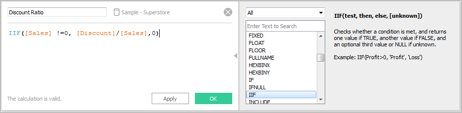
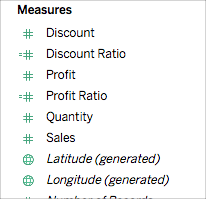

Create a calculated field
Once you have determined the type of calculation you want to use, it's time to create a calculated field. This example uses a basic calculation.
- In Workbench, select Analysis > Create Calculated Field.
- In the Calculation Editor that opens, do the following:
- Enter a name for the calculated field. In this example, the field is called, Discount Ratio.
- Enter a formula. This example uses the following formula:
IIF([Sales] !=0, [Discount]/[Sales],0)
This formula checks if sales is not equal to zero. If true, it returns the discount ratio (Discount/Sales); if false, it returns zero.
|
Tip: |
To see a list of available functions, click the triangle icon on the right-side of the Calculation Editor.  Each function includes syntax, a description, and an example for your reference. Double-click a function in the list to add it to the formula. |
- When finished, click OK.
The new calculated field is added to Measures in the Data pane because it returns a number. An equal sign (=) appears next to the data type icon. All calculated fields have equal signs (=) next to them in the Data pane.

Created with the Personal Edition of HelpNDoc: Full-featured multi-format Help generator